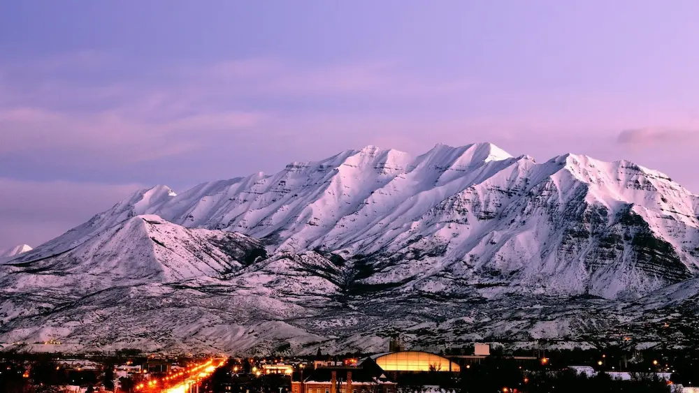

About Me
My name is Kelsey Woodland. I live in Woodland Hills, Utah. I am the wife of an Air Force pilot and the mom to 4 amazing boys. I love spending time with my family skiing, playing basketball, watching movies or cooking great food.

Utah is a beautiful place. I love the mountains and the diverse landscapes. Utah experiences all the seasons in an intense way. The summers are hot with blue skies and lots of hiking, boating, exploring and enjoying the sunshine! Winters are snowy and cold with lots of skiing, sledding, and beautiful snowy vistas. I love Utah!